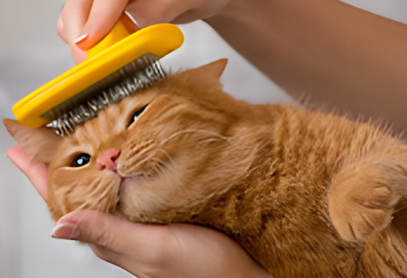

Cat Care
Cats need a balanced diet, fresh water, a clean litter box, regular veterinary checkups, and plenty of exercise and mental stimulation. They should have safe places to sleep, scratch, climb, play, and hide, along with regular grooming depending on their coat. Keep harmful foods, plants, chemicals, and unsafe areas away from them, and make sure their environment is clean and secure. Most importantly, give your cat attention and affection while respecting when they want space, and watch for changes in their eating, behaviour, or energy that could indicate a health problem.
.jpg)
Cat Breeds
Cat breeds have different personalities, appearances, grooming needs, and activity levels, so it’s important to choose a breed that fits your lifestyle. Some breeds are playful and energetic, while others are calm and affectionate, and their coats may require different amounts of grooming. Before getting a cat, consider factors such as their size, temperament, exercise needs, and any breed-specific health concerns. Cats also need a balanced diet, fresh water, regular veterinary care, and a safe, comfortable environment where they can sleep, scratch, climb, and play. Most importantly, give your cat plenty of attention and affection while respecting their individual personality and need for space.

Cat Moods
Cats can experience a wide range of moods, including happiness, excitement, curiosity, fear, stress, and irritation. They often communicate how they feel through their body language, facial expressions, tail movements, and sounds such as purring, meowing, hissing, or growling. A relaxed cat may have soft eyes, a loose body, and an upright or gently moving tail, while a frightened or angry cat may flatten their ears, puff up their fur, or hide. It’s important to pay attention to these signs and give your cat space when they seem stressed or upset. Understanding your cat’s moods can help you build trust, respond to their needs, and create a safe and comfortable environment for them.